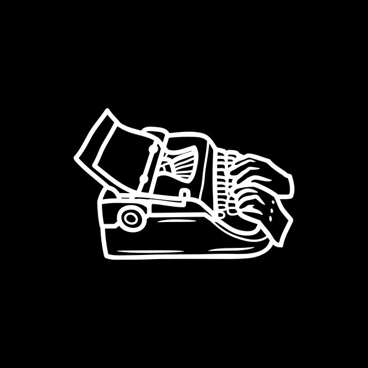
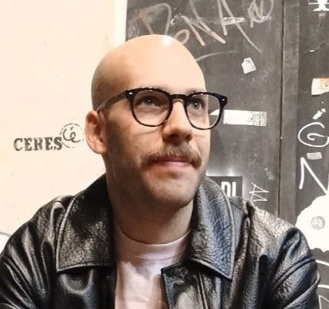

Portfolio
Regista & Sceneggiatore

Filmografia

Chi sono
Sono un Regista e Sceneggiatore Freelance.
Mi occupo di sceneggiature per cinema, TV e web, e di regia cinematografica. Grazie a una formazione di alto livello, ho maturato una profonda conoscenza nella scrittura creativa, narrativa e drammaturgica. Possiedo ottime competenze di regia e una solida padronanza del linguaggio cinematografico. Inoltre, ho eccellenti conoscenze dei media studies, dei media multimediali e una grande dimestichezza con i software più importanti del settore. Collaboro con produzioni e autori per sviluppare progetti originali e curare ogni fase del processo narrativo e registico.
Contattami per collaborazioni e progetti.
Originario di
Palazzolo Acreide, Siracusa
Nato il
25/03/1996
Formazione
2020 — Laboratorio I contratti nella produzione cine-televisiva, Centro Sperimentale di Cinematografia
2021 — Corso di Scrittura Creativa e Progettazione di Storie, con Marco Carrara
2021 — Laurea in Scienze e Tecnologie Multimediali, Università di Udine
2022 — Diploma in Regia e Sceneggiatura, Accademia Griffith, Roma
Attività
Regista · Sceneggiatore · Story Editor · Autore — Roma
Profili
Lavoriamo insieme
Lavoro a stretto contatto con la produzione in ogni fase del processo creativo — dalla creazione del concept, allo sviluppo della sceneggiatura fino alla post-produzione — con attenzione ai dettagli e alla coerenza del racconto. Sperimento con generi diversi, dal dramma alla commedia, cercando ogni volta la forma più efficace per dare vita a una storia.
samuelferla@outlook.it